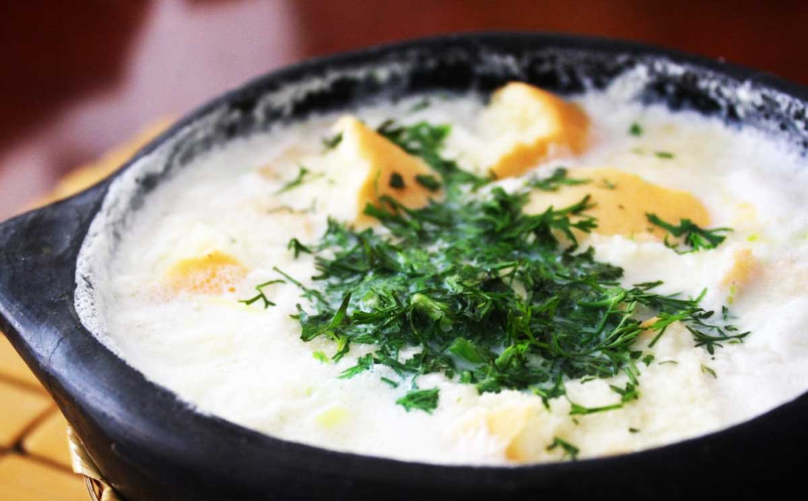

Changua bogotana casera (la auténtica, con sabor a Bogotá)

La changua es el desayuno más representativo de Bogotá que existe: calentita, cremosa y reconfortante, perfecta para empezar el día. Esta versión es la casera de siempre, como la hacen las abuelas en Bogotá: con leche fresca, huevo y cilantro abundante. ¡En menos de 30 minutos tienes un desayuno de campeón!
¿Qué ingredientes necesitamos para preparar una deliciosa changua?
Ingredientes principales (para 4 personas generosas)
- 1 litro de leche entera (o la que te caiga bien; si la leche te cae pesada, usa mitad leche y mitad agua)
- 8 huevos frescos (2 por persona)
- 1 cebolla larga grande (junca), bien lavada
- Mantequilla real (¡por favor, nada de margarina ni manteca! Este es el toque de la abuela) – aprox. 2-3 cucharadas
- Sal al gusto (aproximadamente 5 g por litro de leche)
- Cilantro fresco picado abundante (para finalizar y servir)
Para acompañar y servir (lo esencial en mi versión)
- Almojábanas compradas o pan de mantequilla
- Calado o tostadas (cualquier pan que sea crujiente)
- Queso doble crema (el que se derrite bonito con el calor de la leche) – en trozos
Los utensilios de cocina que necesitamos. ¡Porque sin ellos no hay changua!
Para hacer una changua casera auténtica, estos son los básicos (nada muy fancy, lo que casi todo el mundo tiene en casa en Bogotá):
- Olla meidana o grande – para (de 2-3 litros, la que siempre tienes a mano para calentar leche sin que se pegue)
- Cuchillo afilado
- Tabla de picar para picar cebolla y cilantro
- Cuchara de palo o cucharón grande ideal para revolver sin rayar la olla y servir
- Vaso de vidrio (¡imprescindible! Para romper y chequear los huevos uno por uno antes de agregarlos – tip de la abuela que salva la receta)
- Casuela de barro (la tradicional colombiana, con su canastilla de mimbre o totumo) para servir individualmente y mantener el calor (¡es lo más bogotano!).
Con esto ya puedes empezar sin problemas. Si no tienes cazuela de barro, cualquier plato hondo sirve, pero la de barro le da ese toque especial.
Preparación paso a paso (toque casero de abuela bogotana)
Esta es la receta más tradicional, con el toque de la abuela: sin prisas, a fuego lento y con mucho amor. Tiempo aproximado: 30min
- Corta un pedacito pequeño de la cebolla larga en cuadritos finos (solo la parte blanca, sin el verde por ahora). Esto es para darle el sazón base.
- En la olla pon la mantequilla a fuego medio. Cuando se derrita, agrega los cuadritos de cebolla y sofríe suave hasta que suelten aroma y se pongan transparentes (no dorados, solo sazonados).
- Vierte la leche en la olla y agrega el resto de la cebolla larga cortada en trozos grandes (solo la parte blanca, sin el verde).
- Añade la sal (unos 5 g por litro de leche, ajusta a tu gusto). Revuelve y deja que la leche hierva a fuego medio, removiendo de vez en cuando para que no se pegue.
- Cuando la leche hierva, baja el fuego a bajo. Aquí viene el tip de la abuela: En un vaso aparte rompe un huevo primero (para chequear que esté bueno y no arruine todo). Luego vierte ese huevo con cuidado en la leche hirviendo suave. Repite con los demás huevos (2 por persona). Hazlo uno por uno para que queden enteros y bonitos.
- Deja cocinar a fuego bajo el tiempo que te guste el término de los huevos: en mi caso, para que queden duritos, unos 10-12 minutos más (revuelve muy suave para no romperlos).
Cómo servir (mi forma exacta)
En un plato hondo o en la cazuela de barro pon primero:
- Trozos de almojábanas
- Tajadas o pedazos del pan.
- Queso doble crema en trocitos (se va a derretir con el calor).
- Los huevos cocidos
Una vez armado todo, vierte la leche caliente con mucho cuidado (sin echar la cebolla grande, solo el sabor que dejó). Termina esparciendo cilantro fresco picado por encima. ¡Listo para disfrutar!
Dato de la abuela: Romper el huevo en el vaso aparte evita que si uno está malo, no se dañe toda la receta. ¡Un tip que salva desayunos!
Ahora tienes la auténtica receta de la abuela bogotana, pero aún puedes ver más recetas colombianas caseras en nuestro menú principal.